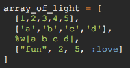
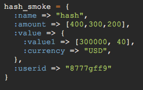

The Joys of Ruby Objects, Part I
April 22, 2015
In understanding Ruby, one must first understand the powers that Ruby holds. In order to attain true Ruby maastery, one must be able to handle and manipulate its objects in ways that allow them to quickly parse through and order data and data sets. And from this need to manipulate sets of data, spawns the two essential tools in the programmers toolbelt: the array, and the hash. In this post I intend to explore how the Array and the Hash can be manipulated within the Ruby programming language.
Array of Light
An array is my favorite thing. It is a powerful tool in a programmers arsenal, and though most all languages possess them, the ruby array has a series of awesome powers that can do some truly incredible things. Before we begin to briefly explore the powers of the array, we must first answer the question: what exactly is it, and what does it contain?
An array is, first and foremost, an indexed collection of objects. By indexed, we mean that each object within the array has a particular "slot" -- whatever the object may be, its index will be the same in that position. It's worth noting that an index starts counting up from zero. In the following example, we'll find that the String object "a" has an index of 0, the Fixnum object 5 has an index of two, the Symbol object :hello_world has an index of 3, and the String object "love" has an index of 4:

Indexing is massively important towards our understanding of arrays, and it should be known that using index information is a valuable means of attaining information about an array. Though the indexing pattern of an array never changes, the objects the index contains can be widely varied. There exists within the Ruby's arsenal of array methods many means of ordering the objects contained within an array in many differing ways -- for example, array_of_light.shuffle and array_of_light.reverse -- and while we're on the topic, let's briefly take a look at some cool array methods!
Array Methods
Array methods are vast and powerful, though they must be used carefully. Some of my favorite include:
- array.sort -- returns an array of strings or numbers into order, from a -> z or 1 -> infinity, respectively. The objects in this array must be compatible with each other in order for the sort to work! (Ruby's sorting algorithm is a quicksort, for those sorting algorithm nerds...)
- array.uniq -- returns an array with any duplicated elements removed. For example:
- array.each { action } -- iterates over an and performs an action to each element of the array. Note that this is different than collect! Read the ruby docs for a proper comparison.
- Too many more to do within a reasonable amount of time

Put that in your Hashpipe and Smoke it
A hash is not my favorite thing. But I greatly understand it's importance. Known as a dictionary in Python, or simply called an object in Javascript, a Ruby Hash is first and foremost a way of organizing key-pair values, represented as follows:
Notice the (:name)? That's what we call a key (the actual key object we use can be a string, but in Ruby we prefer to use symbols -- once a symbol is used, that data value is cached, thus saving memory when called again). A key has an associated value of a string, or an integer, or even another hash or array. It can become quickly mindblowing, but let's wait till later.
Hashes are primarily used for sorting lots of data that an Array might not be able to successfully encapsulate. Hashes can be a great means of communicating the attributes of a Class or another object -- the key-pair value is an essential part of communicating between objects -- as we continue to program, we will find that Hashes will come to encompass a lot of what we do when organizing and moving data.
The True Power
To finish off this blog post, it should be noted that Arrays and Hashes are so powerful in that they can cotnain each other as parts of each other. It's difficult to put in the words so let me just finish this off with a few fun images that highlight the many possibilities of the array and the hash!
  The power... the future...
Back to Top